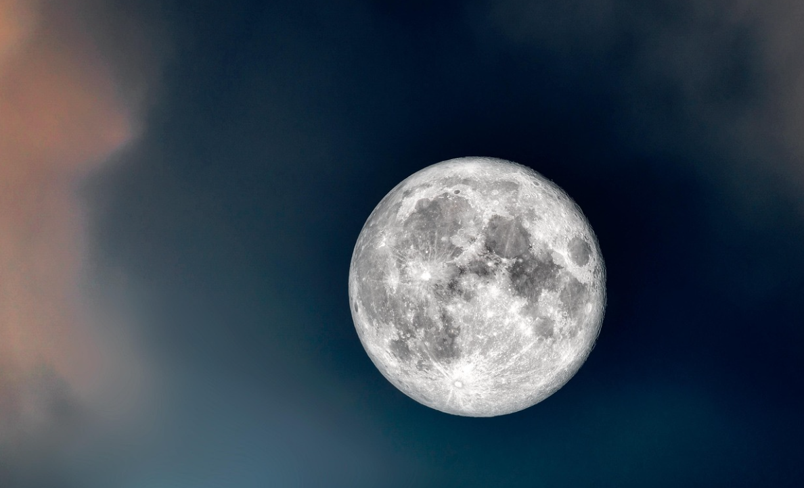

The Moon
The Moon is Earth`s only natural satellite and is the closest object to Earth in space. It plays an important role in controlling tides and stabilising Earth`s rotation.
The surface of the Moon is covered with craters, mountains, and plains. It has no atmosphere, which means temperatures can change dramatically.

Facts About the Moon
- The Moon is about 384,400 km away from Earth.
- It takes about 27.3 days for the Moon to orbit Earth.
- The Moon has a diameter of about 3,474 km.
- It has no atmosphere, which means there is no weather on the Moon.
- The Moon's gravity is about 1/6th of Earth's gravity.